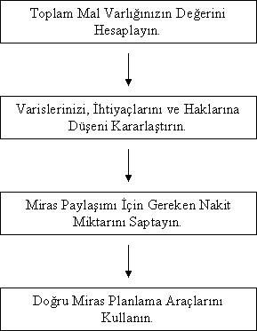

MİRAS PLANLAMASI NASIL YAPILIR
Kesin olan yalnız iki şey vardır: Ölüm ve vergiler!
Benjamin Franklin
İki kardeş babalarından kalan toprağı bir türlü paylaşamıyormuş. Köyün muhtarına gidip yardım istemişler. Muhtar,
- "Biriniz yazı-tura atsın. Diğerinin tuttuğu çıkarsa o toprağı istediği gibi bölsün." demiş. Kardeşlerden biri;
-"Bu çözüm değil" diye atlamış lafa, "Başladığımız yerdeyiz". Muhtar,
-"Hayır" demiş. "Yazı-tura oyununu kazanan toprağı bölecek, ama ilk seçim hakkı diğerinde olacak."
Miras planlaması, mal varlığınızın sizin yaşamınızı kaybetmenizden sonra kanuni varisleriniz arasında paylaştırılması ve idare şeklinin belirlenmesidir. Sahip olduğunuz mal varlığının miktarı ne olursa olsun, miras planlaması yapmanızın tek bir amacı vardır, o da sahip olduklarınızın paylaşımının sizin istediğiniz şekilde gerçekleşmesidir. Çocuklarınız 18 yaşından küçükse onlara kimin bakacağından, mirasınızın ne şekilde ve kimler arasında paylaştırılacağına kadar mirasla ilgili bütün soruların cevabını miras planlamasında bulabilirsiniz. Amaçlardan biri de mal varlığınızın mümkün olan en düşük miktarını hukuki danışmanlık hizmetlerine ve vergilere ödeyerek, kanuni varislerinize mümkün olan en büyük mirası bırakabilmektir. Miras denildiğinde akla ilk gelen birinin ölümü sonucu kendinden sonrakilere bıraktığı mülkü olmakla birlikte, bu eksiktir. Miras planlaması sadece yaşam kaybınız değil aynı zamanda fiziksel ya da ruhsal olarak iş göremez duruma gelmeniz durumunda karar verme mekanizmasının kim olacağını ve mal varlığınızın kim tarafından ne şekilde idare edileceğini de kapsar. Miras planlamasını çok farklı amaçlar için kullanabilirsiniz. İş sahibi iseniz ve şirketinizde ortaklarınız varsa, ortakların birinin vefatı durumunda ailesine şirketteki hissesinin bedeli kadar nakit para ödenmesini sağlayıp işi hayatta kalan ortak ya da ortakların devir alarak devam ettirmesini miras planlaması yaparak sağlayabilirsiniz. Böylece bir kişinin yaşam kaybından onlarca ailenin olumsuz etkilenmesi önlenmiş olur. Bunun yanı sıra ikinci eşinizle evliyseniz ve size ait olan mal varlığınızdan eski eşinizin ya da her iki eşinizin de faydalanmasını istemiyorsanız bunu da hayata geçirebilirsiniz. Birçok aile çocuğunun iyi eğitim görmesini ister. Etkili bir miras planlaması yaparak çocuklarınızın öğrenim hayatları devam ederken yaşamınızı kaybetseniz bile onların sizin mal varlığınızda hak iddia edebilmelerinin ancak üniversiteden mezun olduklarında mümkün olmasını sağlayabilirsiniz. Miras planlaması yaparken amaçlarınızın ya da sorunlarınızın bu kadar karışık olmasına da gerek yok. Tek istediğiniz sahip olduklarınızın aileniz üyeleri arasında adil bir şekilde paylaşımı da olabilir. Ancak yakın çevrenizi de şöyle bir düşünecek olursanız miras konularında tartışmamış aile neredeyse yok gibidir. Zaman zaman seminerlerimde miras problemi olmayan var mı diye soruyorum. Geçenlerde bir bayan parmak kaldırdı, benim miras problemim yok, hiç de olmayacak dedi. Ortada paylaşılacak bir mirasınız yoksa olmaması normaldir, dedim. Bana onların örf ve adetlerine göre kızlara mirastan pay verilmediğini dolayısıyla kendisinin böyle bir probleminin hiç olmadığını ve olmayacağını söyledi! Yurdumdan insan manzaraları. Karşılaşabileceğiniz senaryo ne olursa olsun, miras planlama süreci aynıdır, değişmez. Aşağıdaki şekilde bu süreci görüyorsunuz:

Toplam Mal Varlığınızın Değerini Hesaplayın
"Kaç paralık adamsın?" sorusunun cevabını finansal anlamda verebilmemiz kişisel bilançomuzu hazırlayıp, net değerimizi belirlemekle mümkün olabiliyor. Toplam mal varlığımızın değerini hesaplarken de bu yöntemi kullanabiliyoruz. Buna göre;
Toplam Mal Varlığınız = Toplam Varlıklarınız – Toplam Borçlarınız
Toplam varlıklarınızın miktarını bilmeden onların paylaşımından ve miras konusu olmasından söz edemezsiniz. Bu hesap yapılırken hala hayatta olacağımızdan bazı konularda daha dikkatli davranmak gerekebiliyor. Bunlardan bir tanesi hayat sigortalarıdır. Eğer hayat sigortanız varsa mirasınızı hesaplamak için hesap yaparken hayat sigortasındaki ölüm teminatınızı bu hesaba katmanız gerekir. Hayat sigortanızdaki hesaplanan birikim fonu, yani o güne kadar yaptığınız prim ödemeleri sonucunda oluşan birikim tutarı 25.000 TL ise ve ölüm teminatınız da 75.000 TL ise, mal varlığı hesabınıza bugün hayat sigortamdan iştira edersem elime sadece birikimim olan 25.000 TL geçecek diye hesabı yaparsanız vergi problemlerinden dolayı kanuni varislerinizi sıkıntıya sokabilirsiniz. Oysa siz ölüm riskine karşı bu hesabı yapıyorsunuz ve zaten yaşamınızı kaybederseniz, hayat sigortası poliçesinden teminat tutarı olan 75.000 TL ve birikiminiz olan 25.000 TL olmak üzere toplam da 100.000 TL gibi bir para kanuni varislerinize kalacaktır. Bunun da %10’u istisna tutulur ve kalan miktar olan 90.000 TL üzerinden de %10 vergi kesintisi (9.000 TL) yapılır. Dolayısıyla elinize net olarak hayat sigortası poliçenizden 91.000 TL geçmiş olur. 25.000 TL ile kıyaslarsanız 91.000 TL kanuni varislerinize miras olarak kalması sizin için hayatta olmayacağınızdan çok önemli olmayabilir, ama onlar için önemli olduğundan emin olabilirsiniz! Ayrıca miras hukukuna göre mal varlığınız arttıkça vergi diliminiz de yükseliyor. Bu durumda siz tahmini paylaşımınızı buna göre yapmadığınızda daha doğrusu miras planlamanızı olması gerektiği şekilde yapmadığınızda, ne kadar zengin olursanız olun küçücük bir meblağ bile ailenizin mensupları arasında soğukluk oluşmasına neden olabilir. Yeri gelmişken onu da aktarayım, miras hukukuna göre 2009 yılı güncel vergi oranları aşağıdaki tabloda yer almaktadır:
Veraset İntikal Vergisi Oranları | ||
Veraset İntikali (%) | İvazsız İntikal (%) | |
İlk 160.000 TL için | 1 | 10 |
Sonraki 350.000 TL için | 3 | 15 |
Sonraki 760.000 TL için | 5 | 20 |
Sonraki 1.500.000 TL için | 7 | 25 |
Matrahın 2.770.000 TL’yi aşanı için | 10 | 30 |
Miras hukukuna göre çocuklar ve eşten her birine isabet eden mirasın 107.604 TL, çocuk bulunmaması halinde eşe isabet eden miras hissesinin 215.336 TL veraset intikal vergisinden istisna tutardır, bu tutarlara kadar veraset intikal vergisi söz konusu kişiler için ödenmez. İvazsız intikallerde ise (hediye, çekiliş, hibe, piyango vb.) 2.481 TL veraset intikal vergisinden muaftır. Toplam mal varlığınızın değerini bilmek ve kanuni varislerinizin ne kadarlık bir vergi ödemekle yükümlü olacağını bilmek işinizi önemli ölçüde kolaylaştıracağı gibi mirasınızı da korur. Miras davası olan kişilerin gayri menkullerinin daha ucuza satıldığını duymuş ya da hayatınızda buna şahit olmuş olabilirsiniz. İşte bu tür satışların bir kısmının sebebi miras planlaması yapmamaktır. Diyelim varislerinize 510.000 TL tutarında bir gayrimenkul miras bıraktınız. Bunun toplam veraset intikal vergisi 12.100 TL. Bu durumda varislerinize nakit bırakmadıysanız ve onların da bu vergiyi ödeyebilecek ekonomik durumu yoksa sonuç ne olur? Çok basit, sizin yıllarca çalışarak edinmiş olduğunuz ve miras bıraktığınız gayrimenkul satışa çıkarılır ve muhtemelen de değerinin altında satılır. Kalan para hazır paradır, ona da atalarımız dağların dayanamadığını söylerler. Bunun yerine mirasınızla birlikte bilinçli davranıp vergi borçlarını ödeyebilecek kadar nakit bırakabilir ya da hayat sigortası yaptırıp teminat miktarını da veraset intikal vergilerini karşılayacak tutarda tutabilir, böylece pire için yorgan takılmasını önlemiş ve yaşamınızdan sonra da ailenizin finansal bir çöküntü içine girme ve zarar etme ihtimalini azaltmış olabilirsiniz.
Miras konusu üzerinde konuşmanın çok hoş karşılanmadığı bir konudur. Bu konudan yanlışlıkla bile olsa bahsetmeniz durumunda aileniz tarafından onları sevmediğiniz düşünülebilir. Özellikle de ebeveynleriniz 60 yaşın üzerindeyse. Bazen de insanlar paylaşılacak fazla mirasları olmadığı gerekçesiyle bu konunun üzerinde durmayabiliyorlar. Miras planlaması yapılırken kritik öneme sahip olan mirasın büyüklüğü ya da küçüklüğü değil onun ne şekilde paylaşılacağıdır. Miras planlamasının asıl amacı da kanuni varislerinizi zengin etmek değil, onların sizden sonra da yaşamlarınız huzur içinde, barış ve sevgi içinde geçirmelerini sağlamaktır. Bu anlamda ailenize bırakabileceğiniz en büyük miras, sevgidir. Bir başka boyutu da, eğer arabanız varsa ve eviniz varsa bu miras nakde çevrildiğinde hiç de azımsanmayacak bir miktardır ve sizin gözünüzde çok değerli olmayan bu nakit değer, yaşamınızı kaybetmeniz durumunda çocuklarınızın gözünde aşırı değerli olabilir.
Varislerinizi, İhtiyaçlarını ve Haklarına Düşen Payı Kararlaştırın
Mirasa konu olan toplam mal varlığınızı belirledikten sonraki aşamada varislerinizi, ihtiyaçlarını ve haklarına düşen payı kararlaştırmak vardır. Sahip olduğunuz toplam serveti de bunu yapabilmek için belirliyorsunuz. Özellikle çocuklu ailelerde 40’lı yaşlardan sonra ebeveynler kendilerinden çok artık birer yetişkin haline gelmeye başlayan çocukları için çalışırlar. Servetinizin beklenmedik bir yaşam kaybıyla karşılaşmanız durumunda –bütün ölümler beklenmedik anda gelir- kimler arasında ve ne şekilde paylaşılacağı çok önemlidir. Birçok insan için miras paylaşımı çok basit gibi görünebilir. Mesela basit bir miras paylaşım örneğini inceleyelim. Bir adamın iki çocuğu var. Biri erkek diğeri kız. Çocuklarının her ikisi de evlidir ve adamın eşi vefat etmiştir. Sahip olduğu mal varlığı da yaşadığı ev ve kullandığı otomobilinden ibarettir. Adam da bir gün ölür. Bu durumda mirasa konu olan mallar ev ve otomobildir. Aslında adam açısından çok basit gibi görünen bir durum, iki parçadan oluşan bir malvarlığı, ama iş bunu paylaşmaya gelince hatlar karışabiliyor. Otomobilin değeri 15.000 TL iken evin değeri 100.000 TL. Bu durumda miras paylaşımı yapmak istendiğinde hem kız hem de oğlan doğal olarak eve talip olacaklardır. Olayın sadece iki kahramanı yoktur. Onların evli olduğundan bahsettim, dolayısıyla evin damadı ve gelini de miras davasına müdahil olacaktır. Çocuklar varsa, onlar müdahale edemeseler de olup biten onların yanında da konuşulacağından figüran olarak da olsalar sahnede vardırlar. Senaryoda rahmetlinin torunları ne kadar sevdiğinden rahmetliye en çok kimin hizmet ettiğine kadar birçok diyalog vardır. Kusursuz bir oyunculuk vardır, yalnız bu oyuncuların talip olduğu Oscar ödülü değildir, çünkü o ödül salt ödül olarak ya da sembol olarak bir gayri menkul kadar değerli değildir. Sonuçta ev paylaşılamayabilir. Sağlığınızda birbiriyle çok iyi geçinen evlatlarınızın bir anda vücut kimyası değişebilir. Bu değişikliğin en büyük müsebbibi kimdir biliyor musunuz? Zamanında gerekli miras planlamasını yapmamış olan aile reisi. Çünkü her iki tarafa da sözü geçen kişi odur ve zamanında gerekli adımları belki bilmediği belki ihmal ettiği için atmadığından sorunlarla karşılaşılabilir.
Kime, ne kadar miras bırakılacağı hususunda karşımıza başka bir problem daha çıkar. Paylaşım kararını vermek. Paylaşım kararını verirken kime ne kadar servet bırakacağınızı belirlemek için varislerinizle olan ilişkilerinizi gözden geçirmeniz gerekir. Sadece sizin varislerinizle olan ilişkiniz değil aynı zamanda varislerinizin sizin servetinizle olan ilişkisi de burada önemlidir! Servetinizin doğru bölümünü, doğru kişilere, adil bir şekilde dağılmasını sağlamak da siz hayatta olmasanız da sizin finansal hayatınızın devamı niteliğindedir. 20 yaşında üniversite öğrencisi olan bir çocuğunuz varsa ona eğitim masraflarını karşılaması için toplu miktarda nakit para bırakmanız durumunda, yapacağı son şey o parayla eğitim masraflarını karşılamaktır. Hızlı arabaların ve güzel kızların daha fazla ilgisini çekmeyeceğini kim garanti edebilir?! Buna karşılık hayatını idame ettirmek durumunda olan eşinize de hiçbir nakit değer bırakmayıp gayri menkul bırakırsanız ve onun da geliri yoksa o gayrimenkul de satışa çıkabilir. Farklı bir senaryoda da 18 yaşından küçük ve bakıma muhtaç çocuklarınız varsa, eşiniz de vefat etmişse onların bakımını kimin yapacağı, onlarla kimin ilgileneceği de önemlidir. Bütün bunların kararını en iyi siz verebilirsiniz. Bir ebeveyn olarak çocuklarınıza karşı olan sorumluluklarınız gördüğünüz gibi siz yaşamınızı kaybettikten sonra bile devam edebilir. Bunların dışında mal varlığınızı bir hayır kurumuna bağışlamak da isteyebilirsiniz. Bu ve benzeri senaryolar düşünülmediğinde bir ömür boyunca çalışarak edindiğiniz bütün servetiniz bir anda yok olup gidebilir, bu açıdan bakıldığında dünya gerçekten de fanidir.
Miras Paylaşımı İçin Gereken Nakit Miktarını Saptayın
Paran mı var derdin var. Miras bırakabileceğiniz servetinizin olması şüphesiz varisleriniz ve sizin için çok iyidir. Ancak miras paylaşımının yapılması için gereken bazı ek masraflar vardır. Bunlara örnek olarak hayattayken sahip olduğunuz borçları, resmi kurumlara ödenecek olan ücretleri, veraset intikal vergisini sayabiliriz. Siz hayattayken dostlarınız ve akrabalarınızla para alışverişinde bulunabilirsiniz ve bundan doğan bazı alacak ya borçlarınız olabilir. Bunların kayıt altında olması varislerinizin işini iki yönden kolaylaştırır. Birincisi, kime ne borcunuz olduğunu bilerek paylaşımı yaparlar. İkincisi, borcunuz olmadığı halde rahmetlinin bana borcu vardı diyen insanlar çıkabilir, bunlara karşı tedbirinizi önceden almış olursunuz. Alacak verecek hesabının kayıt altına alınabilmesi için en etkili yöntem bir vasiyetnameye sahip olmaktır, bundan ayrıca bahsedeceğim. Bunların haricinde cenaze masrafları ve buna bağlı olarak yapılacak olan harcamalar olacaktır. Ayrıca malların paylaşımı için gereken veraset intikal vergisi dolayısıyla bir nakit çıkışı da yaşanacaktır. Bütün bu giderlerin nasıl karşılanacağı önceden düşünülmediğinde ve planlaması yapılmadığında varisleriniz sorun yaşayabilir. Bunun nüne geçmenin en iyi yolu elinizde nait paranızın olmasıdır. Yaşamınızı kaybetmeniz durumunda varislerinizin karşısına çıkacak olan masrafların analizini yapıp onları nakit olarak ayrı bir banka hesabında tutmanız durumunda işiniz kolaylaşacaktır. Kaldı ki miras planlaması yapmış olsanız bile, yaşamınızı kaybettiğinizde oluşacak masraflar dolayısıyla servetinizin bir kısmı satılırsa, yine paylaşım sorunları ortaya çıkabilir ya da miras vergiler dolayısıyla yıllarca paylaşılmadan kalabilir ve bu da aile içinde ilişkilerin gerginleşmesine ve bozulmasına sebep olabilir. Kaldı ki vergiler de ödenmedikleri süre içinde aynı kalmazlar. Üzerine ceza bedeli ve faizler de eklendiğinden sorununuzu çözmek yerine onu sadece büyütmüş olursunuz. Bunun tersi olduğunda ise, mirasınız sorunsuz bir şekilde paylaştırılıp ailenizdeki herkes payına düşeni alır, hem olası ihtiyaçları karşılanmış olur, hem aile bağlarınız böyle olduğunda zayıflamayı bırakın güçlenmiş olur, hem de size dua ederler.
Doğru Miras Planlama Araçlarını Kullanın
Miras planlaması için gereken mal varlığı hesabını yaptınız. Kime ne şekilde bir paylaşım yapacağınızın kararını verdiniz. Vergi ve masrafların nasıl karşılanacağını da belirlediniz. Geriye mirasınızı muhtelif yöntemler kullanarak sorunsuz bir şekilde paylaştırmak kalıyor. Bunu yapmanın birçok yöntemi var. Vasiyetname yazabilirsiniz, avukatınızdan faydalanabilirsiniz, bankalardan ve hayat sigortası poliçelerinizden faydalanabilirsiniz. Bu araçların her biri farklı amaçlara hizmet etmesi için kullanılabilir. Yalnız bunu sizin yapmanızı tavsiye etmiyorum. Bu konuda avukatınızdan destek almanızı ya da www.parasalzeka.com adresinden bizim avukatlarımızdan biriyle çalışmanızı öneririm. Bu, hem sizin amaçlarınıza hizmet edecek şekilde bir paylaşım yapabilmenizi mümkün kılar, hem de hangi aracı ne şekilde kullanacağınız hakkında sizi fikir sahibi yapar. Gerek avukatınız, gerek bankacınız, gerek sigortacınız konu hakkında kısmi bilgilere sahip olabilirler. Böyle bir durumla karşılaşmanız halinde de ihtisas alanı miras hukuku olan bir avukatla çalışmanız daha uygun olabilir.
Danışmanlık alabilmek ve danışmanlığa para vermek size ciddi para ve zaman tasarrufu sağlar. Sadece miras vergilerinin net tutarından bile haberdar olmanız ve bu konuda önceden hazırlık yapmanız mirasınızın parçalanmasını önleyebilir. Bir gayri menkulü mecbur kaldığı için varislerinizin satması durumunda %20 zarar edebilirsiniz. Bu da 100.000 TL değerinde bir gayri menkul için 20.000 TL demektir ki bu parayla yeni bir araba satın alabilirsiniz. Danışmanlık almanız durumunda ise maliyetiniz çok daha düşecektir. Avukatların baro tarafından belirlenmiş fiyatları olmasına rağmen ücretleri değişebiliyor. İsteyerek iki saatlik bir danışmanlık alıp 200 TL hizmet bedeli vermeniz, zorla 20.000 TL ödemenizden daha iyidir. Kaldı ki bazı avukatlar danışmanlığa bile ücret almayıp sadece size hizmet verdiklerinde fatura kesebiliyorlar. Bu konuda da ne kadar cömert olursanız karşılığını o kadar fazla geri alacağınızdan emin olabilirsiniz. Hukuki danışmanlık ve avukatlık müessesesi kutsal bir görev ifa ediyor. Görevlerini yerine getirmelerini siz sağlarsanız faydalanırsınız. Ancak onlar görevlerini sizin üzerinde zorla yapmak zorunda kaldıklarında genelde bundan zarar gören taraf siz olursunuz.
Sonuç olarak miras planlama sürecini özetleyecek olursak, öncelikle sahip olduğunuz mal varlığının toplam değerini belirliyorsunuz. Bundan sonraki aşamada varislerinizi, onların ihtiyaçlarını ve hangi varisinize ihtiyacına göre hangi mal varlığınızı bırakacağınıza karar veriyorsunuz. Bundan sonra mirasın sorunsuz biçimde paylaşılabilmesi için yapacağınız vergi ödemesi, resmi kurum ücretleri ve cenaze masraflarını hesaplayıp gereken miktarda parayı nakit olarak bir banka hesabında tutabilir ya da bu masraflarınızı karşılayacak tutarda bir teminatı olan hayat sigortası poliçesine sahip olabilirsiniz. Son aşamada da hangi miras planlama araçlarını kullanacağınıza karar verip, bu konuda yetkin bir kurum ya da kuruluştan danışmanlık alabilirsiniz.